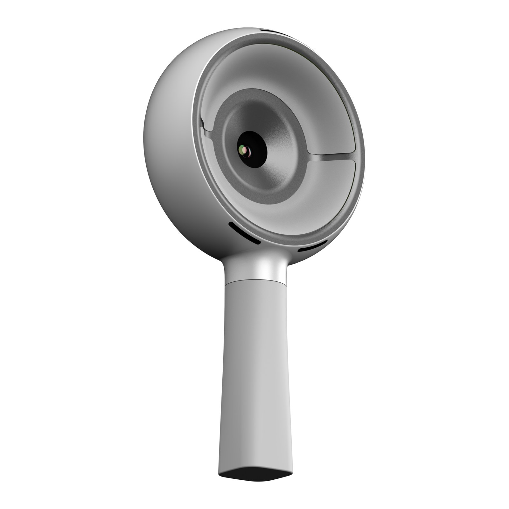

Concept Overview
A device that builds the habit
of learning through observation.
SOROK is an innovative smart device that helps children build the habit of self-directed learning through observation. At a time when children are drifting away from nature and becoming addicted to smartphones, SOROK offers a healthy alternative — turning screen time (social media and games) into 'green time' spent connecting with nature.
Design & Features
Unlike conventional digital devices, SOROK combines hands-on nature exploration and smart technology in a child-centered form factor.
Intuitive AI lens
Recognizes the plants and insects children meet outdoors in real time.
Ergonomic interface
A body shaped for children's small hands, an easy one-button dial system, and a built-in macro camera for close-up observation.
Gamified learning
Going beyond taking photos, learning is designed like play — children scan nature, understand it, and record it in their own ecosystem field guide.



User Experience & Ecosystem
From the field to the guide, from the guide to everyday life.
Exploration does not end outdoors — it continues as learning through recording and sharing discoveries.

-
01
Head into the field
Children take SOROK out into nature.
-
02
Scan with the AI lens
They scan plants, insects and other natural elements with the AI camera lens.
-
03
Complete a personal guide
Collected data syncs with the companion tablet and smartphone app to build 'My Personal Digital Nature Guide.'
-
04
Sketch and share
Children sketch what they found and share it with parents and friends, keeping their curiosity going.
UI demo
Try it yourself.
Follow SOROK's screen flow, from scanning to ecology facts.
Other work